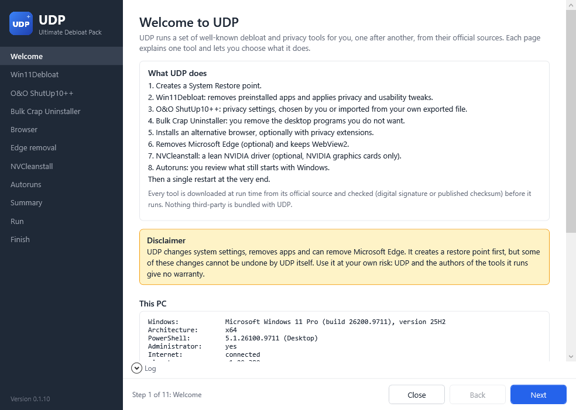
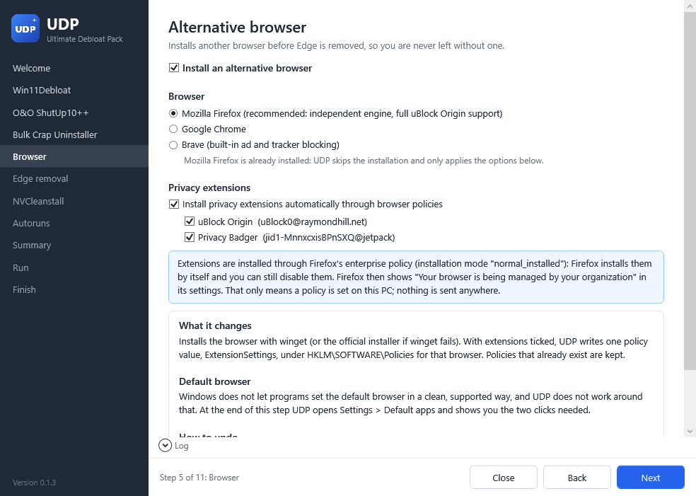
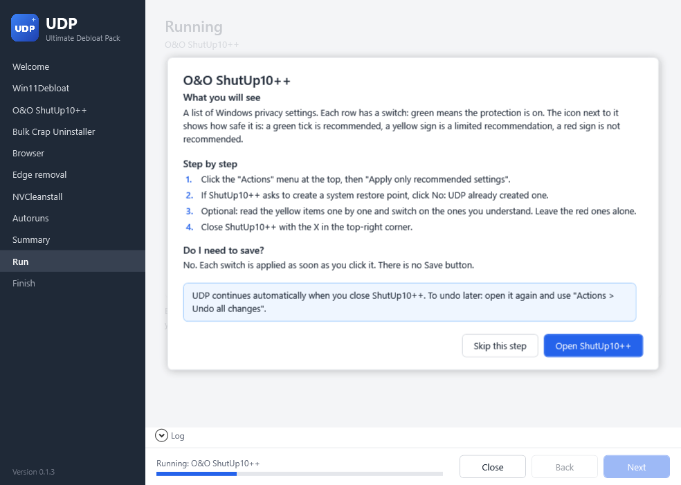

Ultimate Debloat Pack
One wizard to debloat Windows 11 and 10, using only official tools. You choose, UDP explains every step and runs everything in the right order.
PS> irm https://hamiddidnoteat.github.io/udp | iex
Paste it into PowerShell (Start → type "PowerShell"). No need to open it as administrator: UDP asks for the rights it needs.



What's included
Seven well-known tools, each downloaded from its official source when UDP runs. Nothing third-party is bundled.
Win11Debloat on
Removes preinstalled Store apps you choose and turns off telemetry, ads, suggestions, Copilot and Recall.
O&O ShutUp10++ on
Every Windows privacy setting in one list, each with a recommendation.
Bulk Crap Uninstaller on
Remove the desktop programs you don't want, and their leftovers. UDP never removes anything by itself.
Firefox, Chrome or Brave on
Installs your browser with optional privacy extensions, pins it to the taskbar and makes it the default.
Edge removal optional
Removes Microsoft Edge in any country with AveYo's script, and always keeps WebView2.
NVCleanstall optional
A lean NVIDIA driver with only the parts you choose. Offered only with an NVIDIA graphics card.
Autoruns on
Review everything that still starts with Windows, with a guide on what is safe to switch off.
How it works
One window, one tool at a time, one restart at the end.
Check
UDP checks your Windows, internet, winget and graphics card, and measures your PC.
Choose
One page per tool: what it does, what it changes, the risks and how to undo it.
Run
A restore point first, then each tool in the right order. Silent tools show their output in UDP's log.
Restart
A single restart. Afterwards, UDP shows what changed: processes, RAM, apps, startup entries.
Safe by design
UDP runs with administrator rights, so it is built to be checked.
- Official sources onlyEvery download address is listed in one file,
config/tools.json. - Verified before it runsDigital signatures from the expected publisher, or published SHA256 checksums.
- Restore point firstEverything UDP changes can be rolled back with Windows System Restore.
- Dry runSee exactly what would happen, without changing anything.
- Easy to undoAn undo guide for every tool, and one click to remove the browser policies UDP set.
- Open sourceReadable PowerShell, no obfuscation, tested on every change. MIT license.
Other ways to start
The short command above loads Get.ps1 from the official repository. It downloads the latest release, checks it against its published SHA256 checksum and starts UDP. You can also:
Download and double-click
Download UDP.zip, extract it and double-click Run-UDP.bat.
Straight from GitHub
The same bootstrap, without this website:
irm https://raw.githubusercontent.com/HamidDidNotEat/Ultimate-Debloat-Pack/main/Get.ps1 | iex
Requires Windows 11 (Windows 10 for the tools that support it), Windows PowerShell 5.1 (built in) and an internet connection.